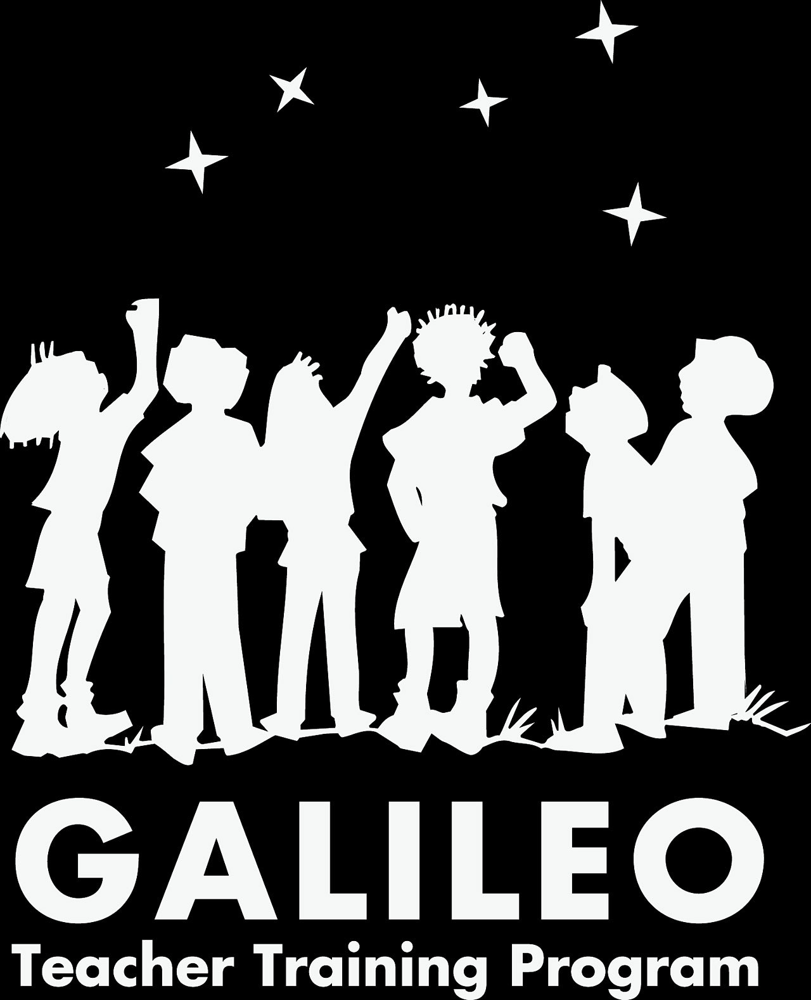
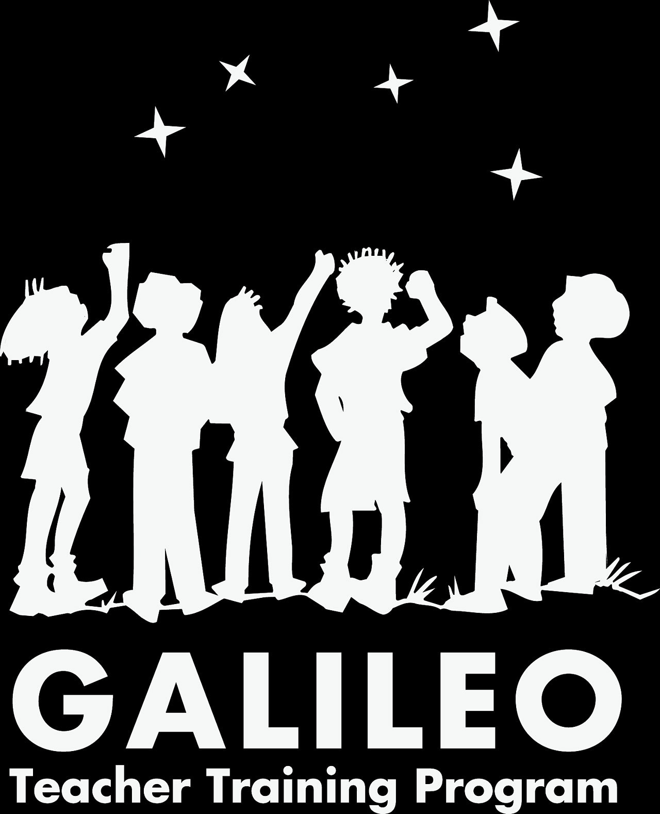

Quienes somos
Natus colerum es un grupo de divulgacion sobre astronomia ubicado en Garagoa Boyaca, dirigido por el lic. en matemáticas y física Alexander Martinez Hernandez, mienbro de la RAC (red de astronomía de Colombia) este propone un mejor aprovechamiento del tiempo libre proporcionando aprendiazaje y diversion con la astronomia.
Nuestro nombre
El nombre fue una discusión entre los estudiantes que asistían, saliendo como idea de una noticia de ese tiempo, de un templo astronómico encontrado por la civilización maya llamada Uaxactún, que se refería la traducción “nacidos del cielo”; la motivación fue tal, que la traducción quedo mal (natus de caelo por natus colerum: nacidos para servir), que con el tiempo la aceptamos.
Nuestra historia
El grupo de divulgación de la astronomía “Natus Colerum” (nacidos para servir), se inició
en la institución educativa “Augusto E. Medina” de Comfenalco Tolima sede Ibagué
(fundado desde 1972), en el año de 2013, como iniciativa en los grados superiores (10º
y 11º), en las tardes de los viernes, siendo unos de los espacios disponibles por los
estudiantes, por estar ocupadas en otras actividades diferentes como las especialidades
(ciencias naturales y matemáticas, artística y articulación SENA en software y hardware).
Viendo el interés por las ciencias en la asignatura de física, se llega a la conclusión de la
motivación de carreras universitarias, ocupación del tiempo libre y la astronomía.Se tuvo la coordinación al principio del grupo
de bioastronomia de la Universidad del Tolima “Shaula”, con conferencias, seminarios y
en la capacitación de grupos escolares de divulgación de la astronomía en Ibague-Tolima
para Colombia por medio de explo9ra Medellín y mundial desde Portugal en el proyecto
GTTP (programa de formación de profesores Galileo).
Ahí comenzó la travesía de reuniones de (astronomía, astrofísica, astrometria,
actividades lúdicas y participaciones internacionales), consiguiendo un telescopio
reflector marca BUSHNELL por medio de un exalumno, las charlas eran en el laboratorio
de física. Se manda a construir una golosa en tela plotter con el sistema solar e
información específica de los planetas para el uso de la sección de primaria (en otros
países se le llama el avión). Se llevó a cabo actividades lúdicas como un sistema solar a
escala de distancias por medio de hilos y shakiras, ubicación de la eclíptica y
constelaciones del zodíaco en la carta celeste, construcción de un transbordador
espacial lamina de explora Medellín. Noches de observación con la participación de
padres de familia, la participación de la medición de diámetro y perímetro de la tierra
con el proyecto Eratóstenes de Unawe (Universe Awareness de la Región Andina, la
Oficina regional Andina de Astronomía de Venezuela y explora Medellín- Colombia: une a las instituciones de Suramérica para la medición de la curvatura de la tierra como lo
hacía el matemático, astrónomo y geógrafo Eratóstenes de Cirene-Grecia). La
capacitación del GTTP relució un proyecto internacional con la NASA y la agencia
espacial europea (ESA) coordinado desde Colombia con la fundación horizonte 2050 del
ingeniero aero espacial de la ESA Fabio Lorza Pitt de Zipaquirá-Colombia, llamado
“misión X, entrénate como un astronauta”
, que constaba de 17 laboratorios, 13 de
educación física, 4 de biología y 1 de física.
La competencia es por países y los países
sumaba según las actividades de las diferentes instituciones educativas inscritas; la
nutrición de conocimiento y cultura fue demasiada llegando a cumplir con todas las
actividades en las fechas determinadas con videos, siendo ese año Colombia el ganador,
y la única institución educativa del departamento del Tolima en participar. Comenzando
nuestro ciclo interactivo por medio de la página del grupo por Facebook, ofreciendo
información de astronomía y ciencias del espacio más las fotos de las actividades hechas
por el grupo dentro y fuera de la institución ese ciclo se cumplió hasta el año 2014.
La segunda etapa del grupo se cumplió en la institución educativa “colegio Champagnat”
de Ibagué, donde la aceptación, por parte de los estudiantes por parte de grados
superiores, los días lunes de 6:30 a 8:00 de la noche cada 15 días, fue llamando adeptos,
hasta tener docentes como visitantes. El colegio se adueñó de la propuesta, dotando al
grupo de astronomía con un telescopio reflector marca TASCO, 10 gafas para ver eclipse
solar, préstamo de instalaciones del colegio (salones, laboratorios, espacios abiertos) y
un juego de la golosa solar adhesiva para visitantes. Así como los estudiantes donaron
laser astronómico, visitaron lugares en sus vacaciones como templos mayas en Cancún,
centro espacial Houston de la NASA. Fueron llegando eventos internos de la institución
(feria de la ciencia), dando un stand para la promoción del grupo a padres, sección
primaria y sección infantil. Cedió las instalaciones para eventos fuera de los horarios
escolares para eclipses solares y conferencias internacionales, hasta el 2017, ofreció al
grupo de astronomía un lugar especial en la institución educativa
La tercera etapa, es la actual, donde se radica el grupo “Natus Colerum” en Garagoa
Boyacá en la institución educativa técnico industrial “Marco Aurelio Bernal”, entidad
pública. A partir del 2019, se comienza la divulgación de la astronomía en el parque
principal del pueblo, a través de la inscripción del evento con la NASA “observación de la luna internacional”, haciendo una sesión mensual con telescopio prestado por un
restaurante. Lentamente la gente, la alcaldía y la comunidad escolar se fueron
motivando ante el proyecto, permitiendo la realización de lúdicas en la casa de cultura
del pueblo “Tomas Villamil”; igualmente en las instalaciones del colegio y apoyo de la
emisora comunitaria un día antes de cada sesión. La institución con el tiempo fue
gestionando la compra del telescopio reflector marca MEADE, un binocular, 10 gafas
para eclipse solar, un filtro solar y una porta celular para tomar fotos desde el telescopio.
Del mismo modo, se gestionó con la asociación de padres de familia para unas gafas de
VR, y darle a la comunidad unas alternativas de divulgación, observación y tecnología
ante la astronomía. Las actividades han sido lúdicas como de eventos con la NASA, unión
astronómica internacional (UIA), universidad de Boyacá (proyectos de investigación,
soluciones SAMSUMG y bl4s del CERN (proyectos escolares de física de partículas). Se
gestionó, invitando al GCPA (grupo de ciencia planetaria y astrobiología de la
Universidad Nacional en el 2019), llegando al ingreso de la RAC (red de astronomía de
Colombia).

 
